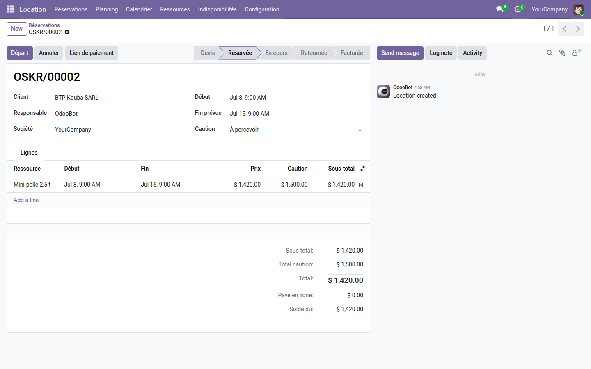
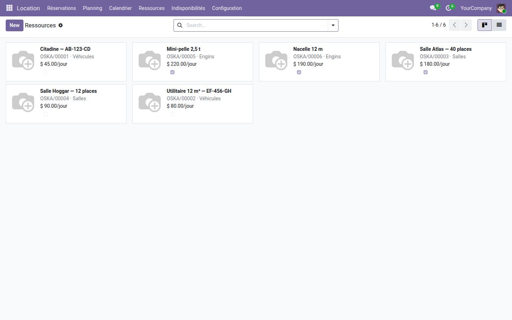
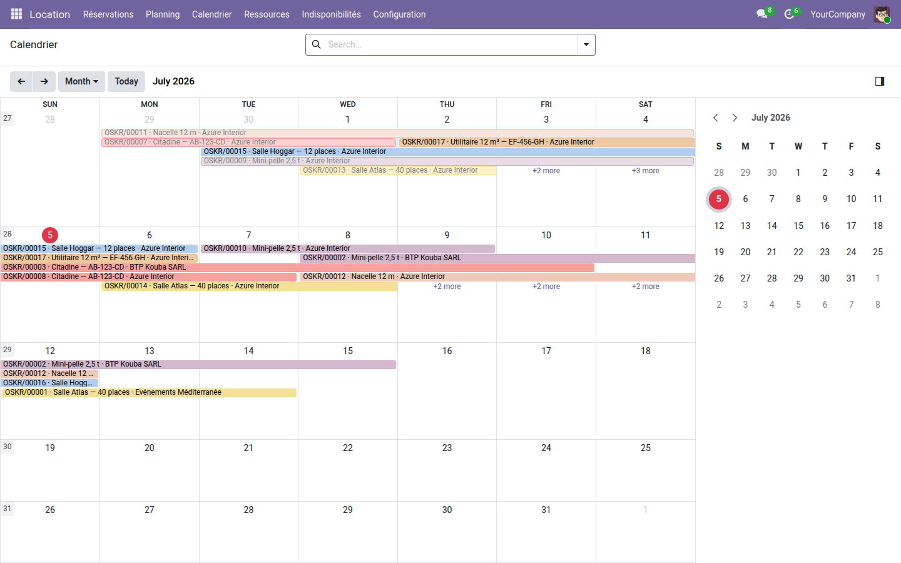

Louez véhicules, salles, engins ou matériel — réservation, départ/retour et facturation dans un seul flux.
Odoo Community ne gère pas la location : on détourne les commandes de vente, on tient les disponibilités dans un tableur, et rien n'empêche de réserver deux fois la même ressource sur les mêmes dates. Personne ne sait ce qui part aujourd'hui, ce qui doit rentrer demain, ni quelle caution reste à rendre.
account.move) directement depuis la location.Chaque location réunit le client, la ressource, les dates, la caution et le montant. Les boutons de départ et de retour font avancer le cycle.

Véhicules, salles et engins sont regroupés par catégorie, chacun avec son tarif et sa disponibilité.

Toutes les réservations et indisponibilités sur une même frise : ce qui part, ce qui rentre, ce qui est immobilisé.

Étendez ce cœur gratuit avec Réservation en ligne (catalogue public et portail client), Paiement en ligne (acompte ou total, confirmation automatique) et Planning Gantt (replanification par glisser-déposer). Suite complète sur apps.odooskills.com.
Module gratuit LGPL-3 — compatible Odoo 19.0 Community & Enterprise. Support : support@odooskills.com.